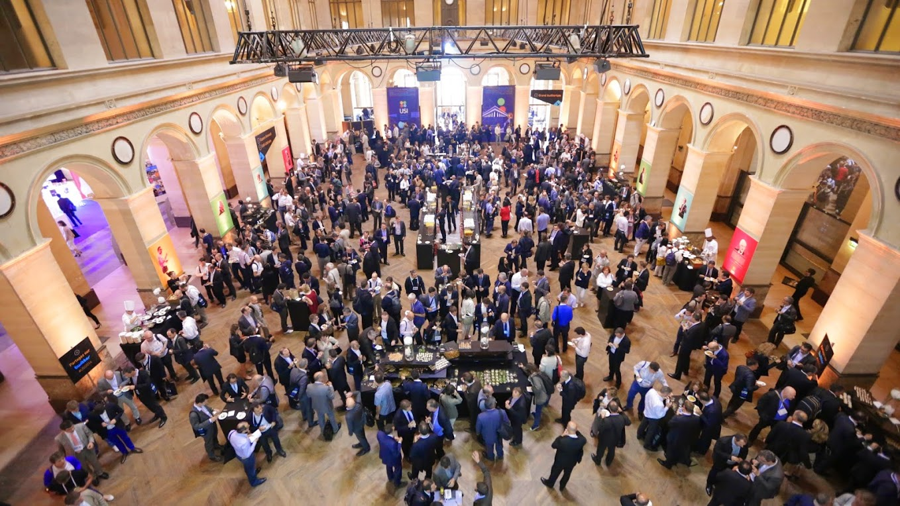
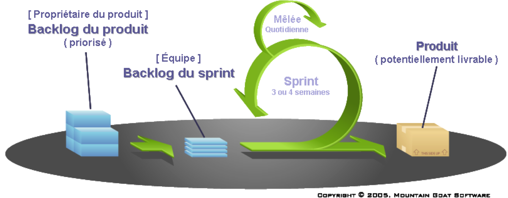
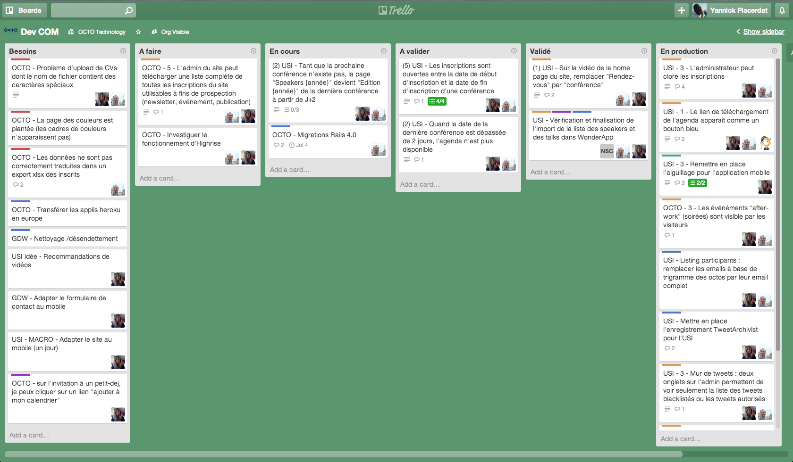

Projet de Fin d'Étude
Yannick Placerdat
Développeur Web 12.1
Refonte du site
Il était une fois...
Île aux trésors
Unexpected Sources of Inspiration
Geeks
Boss
Route semée d'embuches
Ancien site

L'équipage Communication
Valeurs

L'amour du travail bien fait

Ensemble,
nous sommes plus forts

Le pari de la confiance

MVP
( Most Valuable Product )
Methodes Agiles
Scrum
Trello
Kanban
Lean
Amélioration continue
La surproduction
L'attente
Les étapes inutiles
Techniques
Solutions envisagées
Solution retenue
Ruby

Créé en 1995

Yukihiro Matsumoto
Principes :
Élégance syntaxique
Principe de moindre surprise
MVC

View
Controller
Model
Des langages plus faciles à relire
HTML VS HAML


CSS VS SASS